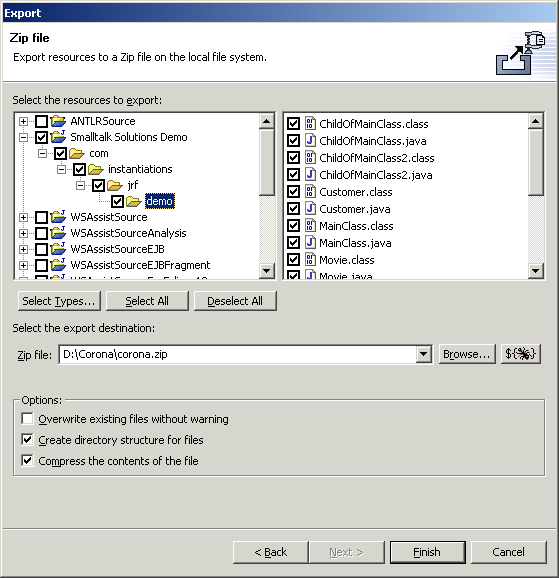

Export Set - Zip File The "Add Export Operation" wizard pages for the "Zip file" operation should be identical to those one would find in the standard export wizard if one were starting a Zip file export manually. The only difference is that the "Finish" button is used to save the export operation rather than execute it immediately.
An codepro.exportToZipFile Ant task is used to record the options chosen and perform the operation as part of an Export Set. |